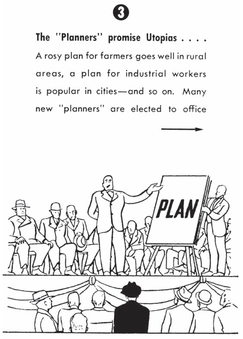
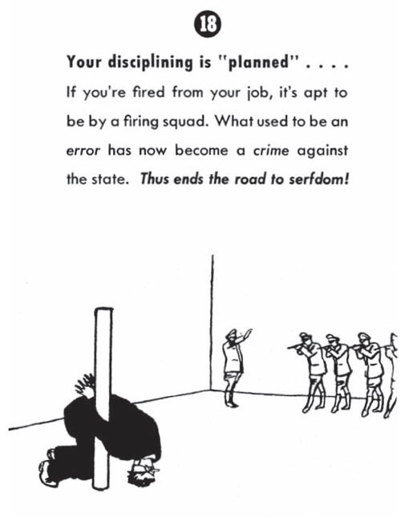

Jordan Peterson has written an attack on climate action for the Telegraph: “Peddlers of environmental doom have shown their true totalitarian colours”. Plenty of people have already pointed out Peterson’s basic climate science errors. Anyone who’s spent time arguing with climate deniers in the past ten to fifteen years won’t find anything remotely original – it’s just a loose collection of clichéd right wing climate denial talking points. But it’s worth showing what an impoverished view of the world it has always been, what a cartoon version of actual climate action it paints – and why ideas like these have been so enthusiastically taken up by organisations that stand to lose out if we act on climate change.
We’ll look at three things:
- Peterson commits fully to the “anything but free markets is tyranny” idea. We’ll examine its origin in Friedrich Hayek*, how it fits into climate denial so perfectly, and some examples of people saying precisely the same as Peterson. We’ll see how “knowledge generated by free markets is the only real knowledge” gets you to the “climate is everything and you can’t model everything” nonsense Peterson comes out with (and why it means thinkers like this don’t believe saucepans exist…)
- Users of these Hayekian ideas try to claim theirs is the only democratically valid worldview and anyone else is a tyrant – Peterson does just the same in his Telegraph piece. We’ll compare his caricature to actually existing democratic climate action and conclude: we get to net zero democratically, or we likely don’t there at all. We’ll also mention that green power tech is naturally more democratic – and Hayekian – than fossil fuels can ever be.
- “If environmentalists were genuinely concerned about the poorest, they’d support fossil fuel expansion” is a common right wing refrain – and one Peterson happily parrots. We’ll have a look at just how disingenuous this is.
1. “True totalitarian colours”.
Let’s start with the ‘totalitarian’ thing. Here’s the picture Peterson paints. There’s a “cabal of utopians operating in the media, corporate and government fronts, wielding a nightmarish vision of environmental apocalypse”. He says to “omniscient planners”: “what gives you the right to enforce your demands? … We do not believe… you should be ceded all necessary authority.”
We’ll see other examples of people saying exactly the same thing below, but let’s start with Peter Phelps from 2011, as it ties nicely to Hayek (as well as being in the same tone as Peterson):
At the heart of many scientists lies the heart of a totalitarian planner. And now, through the great global warming swindle they can influence policy, they can set agendas, they can reach into everyone’s lives; they can, like Lenin, proclaim “what must be done”.
Phelps quotes Hayek’s Road to Serfdom (from 1944):
It is well known that particularly the scientists and engineers, who had so loudly claimed to be the leaders on the march to a new and better world, submitted more readily than almost any other class to the new tyranny.

Hayek believed that scientists and engineers had a “contempt for anything which was not consciously organised by superior minds according to a scientific blueprint”. He saw totalitarian danger in their “agitating for a ‘scientific’ organisation of society”. It’s easy to see how one gets from there to a “green tyranny” (the title of a 2017 book; as this review says, it’s all “a coup in which a group of capitalism-hating elites are attempting to gain power at the expense of everyone else”).
(There’s a rather natty cartoon version of the Road to Serfdom, if you’d like an 18 point illustrated guide of the path from ‘well meaning planners’ to death by firing squad.)
Peterson is regurgitating exactly the same Hayekian stuff that’s seeped its way into so much climate denial. It’s all absolute bobbins of course, and we’ll talk about that shortly. But let’s look at Peterson’s views on climate change first – which quickly circles us back round to Hayek.
Via the Joe Rogan podcast, Peterson thinks –
There’s no such thing as climate. Climate and everything are the same word, and that’s what bothers me about the climate change types. It’s like climate is about everything. OK. But your models aren’t based on everything. Your models are based on a set number of variables. So that means you’ve reduced the variables — which are everything — to that set. Well, how did you decide which set of variables to include in the equation if it’s about everything?… Because your models do not and cannot model everything.
He goes on to say:
As you stretch out the models across time, the errors increase radically. And so maybe you can predict out a week or three weeks or a month or a year, but the farther out you predict, the more your model is in error. And that’s a huge problem when you’re trying to model over 100 years because the errors compound just like interest.
As others have said, confusing weather and climate is about as basic a climate science error as it’s possible to make. According to Peterson’s logic, it would be impossible to predict if winter will be colder than summer. Presumably some people have tried to point out these errors to him, but he still clings to the same argument.
Why? I think because it fits with his theory of knowledge – which is, again, pure Hayek (or possibly Matt Ridley, who channels Hayek, and Peterson says he’s read; I’ve not found Peterson talking directly about Hayek anywhere). It’s worth spending some time on this: it’s fascinating, if bizarre, and helps shed light on this flavour of right wing opposition to climate science. The Hayekian opposition to scientists as planners, and the market as a perfect knowledge machine, seems to extend to a total rejection of any scientifically acquired knowledge (if applied to society).
Digging a little more into the weather/climate confusion can shed light on this Hayekian problem. The science here is entirely intuitive, and is a nice illustration of the basics of chaotic systems. How come seasons are a thing if we can’t predict long-term weather? Consider atoms in a pan of water on the hob: it’s physically impossible to model where any one atom will be for any length of time. And yet we can know with certainty the pan will boil. (This is Prof. Stephen Sherwood‘s analogy.)
How? There’s chaotic behaviour that makes long-term prediction of any atom’s position in a pan impossible; exactly the same is true for long-term weather. But there are boundaries to both systems. That’s why there can be seasons (the overall system is heated differently depending on the angle to the sun; school kids know this). That’s why temperature and pressure in a boiling pan changes predictably despite us having zero chance of modelling atomic motion for long, and why we understand climate forcing due to carbon dioxide and other heat-trapping gases.
You can see the effects of CO2 for yourself with a simple two bottle plus alka seltzer plus heat source experiment (and again, you couldn’t predict where the atoms would be). Of course, there are more complexities in how the Earth system reacts – but the boiling pain analogy is completely valid: energy won’t stop building up in the biosphere until we stop putting extra CO2 into it. It’s that simple.
How does this connect to Hayek and Peterson’s burrowed-in “climate is everything” views? Let’s go back to Peterson’s own words. Combining a few points from the Telegraph article, he says:
The global economy, let alone the environment, is simply too complex to model. It is for this reason, fundamentally, that we have and require a free-market system: the free market is the best model of the environment we can generate. It is and will remain the best model that can, in principle, ever be generated (with its widely distributed computations, constituting the totality of the choices of 7 billion people). It simply cannot be improved upon – certainly not by presumptuous power-mad utopians… Centralists are pushing things too far. It will not produce the results they are hypothetically intending.
Hayek’s view of the free market is identical: a vast, evolved, decentralised knowledge system in which human minds are – relatively speaking – mere ants. As Hayek said in 1978:
By a process which men [sic] did not understand, their activities have produced an order much more extensive and comprehensive than anything they could have comprehended, but on the functioning of which we have become utterly dependent.
You can find Peterson’s market/knowledge views in their entirety in Hayek’s 1945 essay, The Use of Knowledge in Society: the free market is the only valid knowledge-generating mechanism, capable of coordinating all economic activity. It is supra-human: the presumption that scientific knowledge can be used to intefere with the market’s working, so the theory goes, is both profoundly ignorant of the true nature of knowledge and deeply dangerous hubris, failing to understand the limits of human minds relative to the intelligence of the market.
This way of thinking privileges individual social “atoms” above all else – to the point where Hayek, in fact, denied the existence of anything but those atoms. He labelled the idea of any larger social entity a “fallacy of conceptual realism” (also known as the fallacy of misplaced concreteness). In effect, he denied the existence of the pan the water boils in.
It’s this saucepan denialism we can see in Peterson and others’ climate denial: they’ve let their “market knowledge” theory become their theory of everything (Peterson and Ridley’s use of that word isn’t an accident). According to this theory, as Peterson says, “The free market is the best model of the environment we can generate”. He’s placing free markets above any other knowledge-generating method we have. Scientific knowledge is secondary. Saucepans can’t boil, and the climate can’t accumulate energy – or at best, we can’t say anything truthful about either claim, because doing so entails trusting a subset of ant-like human minds over the infinite wisdom of the market.
If this sounds obviously mad, that’s because it is. It’s deeply conservative mysticism that goes back to at least Edmund Burke’s rejection of individual reason in favour of awe, reverence and respect for “the general bank and capital of ages”. There are some interesting and useful insights into complex social systems in there (including the nature of markets) but it’s gone way beyond that into a fundamentalism that warps all other reality around it. As conservative theorist Michael Oakeshott said:
A plan to resist all planning may be better than its opposite, but it belongs to the same style of politics.
And the prevalence of this libertarian / Hayekian mishmash in the climate denial cosmology is, not coincidentally, a super-convenient figleaf for anyone opposed to climate action, or indeed any social or state action at all. Peterson’s just repeating these same tired arguments.
2. “No pathway not dependent on force”?
From that foundation, it’s clear how to get to: “Anything but submitting to the infallible intelligence of the market slides into tyranny”. The flipside is “free markets guarantee freedom and democracy”; Peterson and Hayek are simpatico on this. Quite what form of democracy Peterson would allow, though, is unclear. He says in the Telegraph (I’ve added a couple of extra negatives in here I think he missed):
There is simply no pathway forward to the green and equitable utopia that [doesn’t necessitate?] necessitates the further impoverishment of the already poor, the compulsion of the working class, or the sacrifice of economic security and opportunity on the food, energy and housing front. There is simply no pathway forward to the global utopia you hypothetically value that is [not?] dependent on force. And even if there was, what gives you the right to enforce your demands? On other sovereign citizens, equal in value to you?
That’s black and white, then – “simply no pathway not dependent on force.” Uh huh. He has a solution:
We should obtain true, cooperative consent from those affected – farmers, truckers, working-class people who have turned in irritated desperation to figures such as Donald Trump – and work with them… trying to maintain as much freedom and autonomy as possible.
Hard agree! 99.9% of people working for a stable climate would also agree (not counting anyone happily working in authoritarian regimes). We get to net zero democratically, or we likely don’t there at all. We have to tolerate working with some dictatorships and sham democracies to achieve global aims (including things like avoiding nuclear annihilation), but “true, cooperative consent from those affected” is essential.

So why is Peterson saying climate action can’t be achieved without force? Same answer as above. You can only conclude climate action is ‘totalitarian’ if you buy into Hayekian fundamentalism, where anything with a whiff of ‘well meaning planners’ automatically equals ‘death by firing squad’ and the end of democracy. (I’ll give Peterson slightly more benefit of the doubt below.)
In the real world, there’s a cornucopia of democratic innovations happening to help create a stable climate. Peterson is attacking ghosts of his own (and many other climate deniers’) imagination, bearing no resemblance to modern policy making. Let’s take a brief look at the democratic reality.
Some claim the only climate solution is complete system revolution, some push for market solutions, some want well-regulated, mixed economies (note, it’s quite possible to accept the power of free markets without turning them into a deity). Some argue technology will do it, some look to behavioural change, some say it must be local, some say global… democratic politics in all its messy cacophony, in other words. Most understand that experimentation and prototyping is necessary to test policy; Geoff Mulgan’s book on imagination in politics is a good recent examination of this. Few people think huge, modernist blueprints drawn up in smoky rooms can work. Elinor Ostrom put it succintly in her final essay:
We cannot rely on singular global policies to solve the problem of managing our common resources: the oceans, atmosphere, forests, waterways, and rich diversity of life that combine to create the right conditions for life, including seven billion humans, to thrive. We have never had to deal with problems of the scale facing today’s globally interconnected society. No one knows for sure what will work, so it is important to build a system that can evolve and adapt rapidly. Decades of research demonstrate that a variety of overlapping policies at the city, subnational, national, and international levels is more likely to succeed than are single overarching binding agreements. Such an evolutionary approach to policy provides essential safety nets should one or more policies fail.
The latest IPCC mitigation report makes clear the –
growing role of non-state and sub-national actors including cities, businesses, Indigenous Peoples, citizens including local communities and youth, transnational initiatives, and public-private entities in the global effort to address climate change.
Adaptive networks of action between all these are decidedly non-totalitarian. The UN process itself is an ongoing, intense democratic tussle (though of course organisations like the Heartland Institute see the UN’s true goal as creating an ‘eco-dictatorship’, just another platform for Peterson’s ‘elite cabal of utopians’).
Democratic innovations abound. Climate assemblies are particularly appealing. The amazing success of Northern Ireland’s citizens’ assembly on abortion, leading to a referendum, shows how complex, contentious issues can be handled in a fully participatory way. Close to my own heart is the question of “how to use data as a tool for empowerment rather than oppression” (the subtitle of Sarah Williams’ Data Action). Hayek and those using his ideas, knowingly or otherwise, have half a good point about the nature of knowledge and data, and how top-down data can cause problems. Solutions parallel citizens’ assemblies – the principle being, as Peterson says, “true, cooperative consent from those affected”.
But if you believe only the free market is capable of adaptive knowledge production, do you think any of the above is democratic? It’s certainly common to find market fundamentalist climate deniers opposing action passed by democratic mandate. Take the Inflation Reduction Act Biden just signed at the time of writing. If you google “Inflation reduction act totalitarian”, there it is:
The Inflation Reduction Act recently passed by Congress is a totalitarian piece of legislation that brings America further down the road to totalitarian socialism.
“Totalitarian” twice in one sentence, nice. And it goes straight into “why central planning does not work” (answer: exactly the same as Peterson’s – because the market is the only tool capable of coordinating knowledge, anything else is tyranny etc etc).
What kind of democracy would be acceptable, then? Some on the right say money exchange is –
– more genuinely democratic [because] it involves the decisions of many more individuals at much more frequent intervals.
If you believe the market is the only valid knowledge generator, this is perhaps the only form of democracy acceptable to you. (It’s hardly one person one vote, though, is it?)
Peterson himself may not agree with those last two examples, but his ideas mesh remarkably smoothly with this whole cosmology of ‘omniscient planners’ and ‘cabals of utopians’. Perhaps he is supportive of the messy democratic reality I’ve described, and only wishes to reject ‘elite groupthink’. He can’t have it both ways though. He can’t both support “true, cooperative consent from those affected” and maintain the idea that climate action in general is tyrannical. It’s also difficult to argue you believe in cooperative consent if you place the free market’s knowledge production on a pedestal above all else – and placing it above science indicates you do.
A last point about democracy and the net zero transition. One reason Hayek believed markets guarantee freedom was because they spread power around – he argued they make it harder for power to concentrate, neutering the emergence of tyranny. What kind of political power does the fossil fuel industry tend towards?
Fossil fuels’ link to tyranny and corruption is so strong, we have a term for it: petrostates. The resource curse shows (with rare exceptions) how the natural concentration of fossil fuels props up elites at the expense of countries’ people. This lets elites burrow in to power, and use oil as a weapon of proxy war (as in 1973, and now as Russia weaponises gas access). Hardly a force for democratic good.
In contrast, green energy production can be more naturally distributed. The centrality of energy to state power is such that states will try to capture it – but green power offers the world a chance at true energy democracy in a way fossil fuels never could. It’s clearly a better match for the kind of Hayekian distributed power the free market represents, if that’s what you claim to want.
As we’ll see in the next section, however, Peterson’s happy to eagerly embrace fossil fuels, using more denier clichés to support his position.
3. “Make the poor poorer – this is the concrete plan”.
That heading is a direct Peterson quote from the Telegraph – anyone pushing for climate action actively wants to make the poor poorer, apparently. These are more well worn climate denier tropes. They’ve been doing the rounds in the UK recently – for instance, Tory climate denier Steve Baker saying, “It’s alright for some: The poorest will pay the highest price for net zero fantasies”.
So how does Peterson conclude climate plans will make the poor poorer? He gets this from consultant firm Deloitte saying the –
– combined cost of the upfront investments in decarbonization, coupled with the already locked-in damages of climate change would temporarily lower economic activity, compared to the current emissions-intensive path.
Note the sleight of hand here. Even if reaching net zero does have a relative cost (views differ on this; the required investment may boost growth), that does not mean “making the poor poorer”. It depends how the costs are distributed; the richest could bear a larger burden (not a popular idea on the right, I know). Peterson seems to agree – he calls for spending on the poorest:
Money could and should be spent to ensure the health and therefore future productivity (and environmental stewardship) of currently poor children in developing countries.
That’s great – if he’s genuine about this, it solves his issue with the “make the poor poorer” problem, helping to distribute costs justly. And he’s right that creating economic security is a brilliant way – perhaps the only way – to protect the environment. If people’s economic options are limited to environmentally destructive ones, the best option? Create better opportunities. Virunga national park, where the park and its mountain gorillas were under threat, is a successful example: as the park’s director says, “Work with civil society, the private sector and other government institutions, to create a new economy – that’s the way to overcome the problem.” (Though the struggle is far from over.)
Although… while I don’t wish to doubt Peterson’s genuinely held concern for the poorest, he then slides into arguments he’s picked up from people like Bjorn Lomborg, who ostensibly agrees climate action is required, but then argues the best solution for the world’s poorest is… more fossil fuels. Peterson mimics his opponents’ view:
“Those most exposed to the economic damages of unchecked climate change would also have the most to gain from embracing a low-emissions future.” Really? Tell that to the African and Indian populations in the developing world lifted from poverty by coal and natural gas.
It’s entirely uncontroversial that almost all global development up to this point has been fossil-fueled. Peterson sides with Lomborg, however: if fossil fuels are the best way to help the poorest, we need more of them.
Peterson and Lomborg’s view has plenty of vocal, well funded supporters. To pick a prominent example, Alex Epstein (author of “The Moral Case for Fossil Fuels” and member of the oil-funded Cato Institute) has said any restrictions on fossil fuels –
– are not merely strings attached, they are a noose attached. They would restrict the energy that underdeveloped countries need to grow and indeed to survive.
Epstein concludes that oil, coal and gas expansion is the the only way that growth can continue.
One eensy problem: the entire foundation of Peterson, Epstein and Lomborg’s case has to rely on climate science being wrong. People making these “fossil fuels are the only way to help the poorest” arguments will have to peddle one climate fudge or other. Peterson: the climate is too complex to model, only knowledge generated by the economy is valid. Lomborg: “drastic carbon cuts would be the poorest way to respond to global warming”. Epstein: humans have caused some warming, but we need to grow fossil fuel use.
Fossil-fueled concern for the poorest plays a vital role in fudging the science like this. Make enough noise, paint your opponents as anti-development tyrants, and the rudimentary climate science errors you make are drowned out (a variation of the Gish gallop).
Peterson, Lomborg and Epstein are all fudging in this way. But physics doesn’t care a jot about their wilful refusal to understand climate science. Whether they “believe” it is beside the point; if you jump off a tall building, physics won’t care if you believe in gravity. If you want to accuse physics of being tyrannical on the way down, go ahead. The rest of us call it reality.
So let’s visit reality again. Increasing fossil fuel use would lead to worst-case outcomes, where the physical changes to the biosphere will be so shattering by century’s end, there’s little point attempting to model the social and economic damage. As Nicholas Stern puts it:
It is hard to understand or put numbers on the potential devastation and agony around the process of loss of life that could be involved.
And the poorest will be hit hardest by climate change. They already are, and it will continue to worsen until we bring the amount of CO2 we dump down to zero. While we get there, we should help poorer countries access as big a share as possible of the amount that can be burned safely. Richer countries’ GDP has a much smaller proportion of fossil production, relatively, than others – poorer countries need more of the remaining carbon budget. Ideas like a fossil fuel registry able to account for all global production would help us allocate fairly.
I was speaking to two friends who’ve been working in Malawi for many years. Access to electricity there has been increasing but is still only at around 15%, and much of that is small-scale micro-grids – nothing like the kind of consumption I can access here in the UK. There are high hopes for technological leapfrogging – as has happened with mobile phones. But, as Peterson rightly points out, until such technology can offer something fossil fuels can’t – cheaper, more convenient – it will struggle. That’s already happening in some places, but there’s a long way to go.
Ignoring the effects climate change will have on the most vulnerable suggests a fundamental unseriousness. Getting the entire planet to zero carbon is fiendishly hard – obviously. Getting there in a way that protects the most vulnerable and provides sustainable economic benefits for countries like Malawi – to paraphrase Reece Sheersmith, yes, we have thought about that. Engage with reality, not with daft Hayekian fever dreams of secret utopian cabals.
Notwithstanding the points above about the political evils of fossil fuels, they have allowed us to develop this far. As David Mitchell puts it:
Burning oil, and the various machines we’ve invented that burn oil, is brilliant, and it’s a real ****er we can’t do it any more, but we can’t, because of facts.
Peterson grudgingly tells us:
Help replace dirty energy with clean, if you must, but do it on your own dime, and make sure that the results are cheap and plentiful, if you want to help the poor, and the planet.
I mostly agree. But it would also really help if he stopped echoing the cartoon villain portrayals of global climate actors so prevalent in denial circles, accepted the obvious benefits of a green transition, spoke to some actual climate scientists, continued to call for funding to be directed to those most in need – and dropped the nonsense Hayekian market fundamentalism so beloved of anyone opposed to taking action.
Notes:
- *: The “anything but free markets” idea goes back further than Hayek e.g. to Mises, but Hayek was responsible for making these ideas so globally prominent, and their eventual uptake by climate deniers.